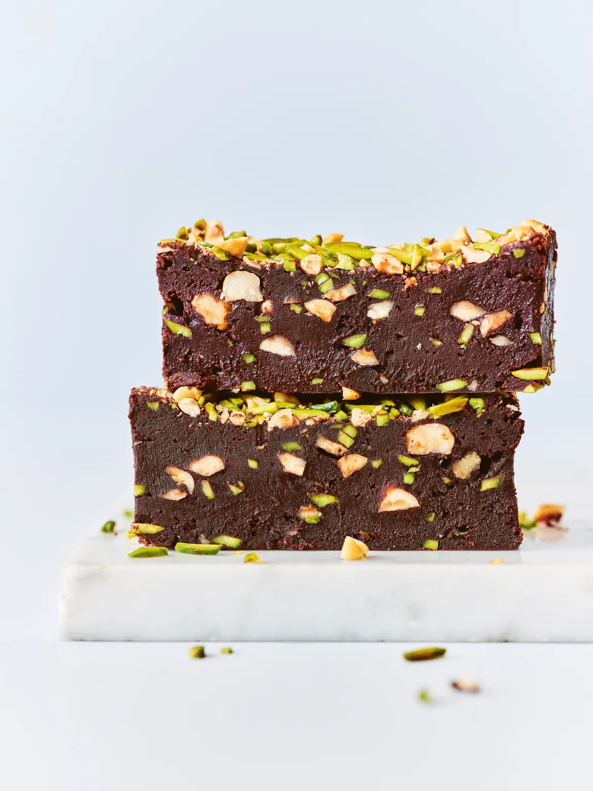

Reynold Poernomo

This decadent and delicious Brownie recipe is from MasterChef alumni Reynold
Poernomo's new dessert cookbook The Dessert Game.
I think everyone should have a good brownie recipe in their repertoire.
Brownies are pretty easy to make, but easy doesn't mean boring, there's
nothing boring about an epic brownie! And let me point out that brownies
don't have to be made with 'evil' processed white sugar. I've used muscovado
sugar here because I love the flavour profile and it also reduces the
sweetness. But it's not about health, after all, it's a brownie we're
talking about!
You can have fun with this recipe and substitute ingredients, use palm
sugar or brown sugar and try different blends of good-quality couverture
chocolate, which is the key to an amazing brownie. Or replace the plain
flour with coconut flour or another gluten-free alternative. Add some spices
or even brown the butter before mixing it with the chocolate.
Source
Serves 6
- Oil spray, for greasing
- 270 g (9.5 oz) 60% dark chocolate
- 250 g (9 oz) unsalted butter
- 240 g (8.5 oz) muscovado sugar
- 2 pinches of salt
- 4 eggs
- 60 g (2.25 oz) plain (all-purpose) flour
- 80 g (2.75 oz) dark cocoa powder
- 1 teaspoon baking powder
- 50 g (1.75 oz) roasted hazelnuts, coarsely chopped
- 50 g (1.75 oz) slivered pistachios
- Preheat the oven to 170°C (340°F). Line a 15 x 30 cm (6 x 12 inch) cake
tin with baking paper and spray with oil.
- Combine the chocolate, butter, muscovado sugar and salt in a heatproof
bowl over a saucepan of simmering water and stir occasionally until
melted. Remove from the heat and whisk in the eggs.
- Sift the flour, cocoa and baking powder onto the chocolate mixture and
fold until a batter is formed. Fold half of the hazelnuts and pistachios
into the batter.
- Spoon the batter into the tin and smooth the top. Scatter the remaining
hazelnuts and pistachios over the batter in an even layer. Bake the
brownie for 15-20 minutes. The centre will still be quite soft but will
set once it cools (the brownie should be moist and fudgy, if it's too
crumbly, it has been overcooked). Remove from the oven and set aside to
cool to room temperature.
- Remove the brownie from the tin and cut it into slices. Serve it to your
loved ones or love yourself and dig in! The brownie is best when warmed
a little in the microwave and served with a scoop of your favourite ice
cream.
Homepage